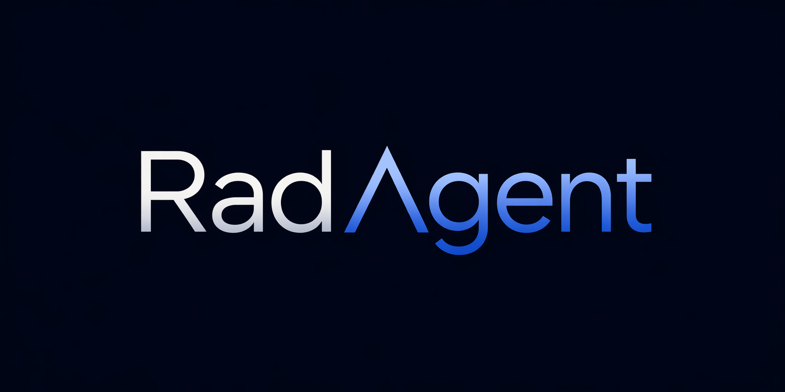

Vision-language models have markedly advanced AI-driven interpretation and reporting of complex medical imaging such as computed tomography (CT). Yet, existing methods largely relegate clinicians to passive observers of final outputs, offering no interpretable reasoning trace for them to inspect, validate, or refine. To address this, we introduce RadAgent, an RL-based framework for training radiology agents that organize CT report generation as a stepwise and interpretable process. We instantiate this framework in a 14B-scale language agent whose reports are paired with fully auditable traces of decisions and tool interactions, offering detailed insights into the report's underlying reasoning and decision-making processes. In our experiments, we find that beyond transparency, RadAgent improves chest CT report generation over its 3D VLM backbone counterpart, CT-Chat, across three dimensions, with relative improvements in clinical accuracy of 36.4% and 19.6% in macro and micro averaged F1, 97.2% in faithfulness, and 41.9% in robustness. By structuring the interpretation of chest CT as an explicit, tool-augmented and iterative reasoning trace, RadAgent brings us closer towards transparent and reliable AI for radiology.
@article{roschewitz2026radagent,
title={RadAgent: A Tool-Using AI Agent for Stepwise Interpretation of Chest Computed Tomography},
author={M{\'e}lanie Roschewitz and Yitian Tao and Kenneth Styppa and Jiwoong Sohn and Jean-Benoit Delbrouck and Benjamin Gundersen and Christian Bluethgen and Bjoern Menze and Farhad Nooralahzadeh and Michael Krauthammer and Michael Moor},
year={2026},
url={https://rad-agent.github.io/}
}